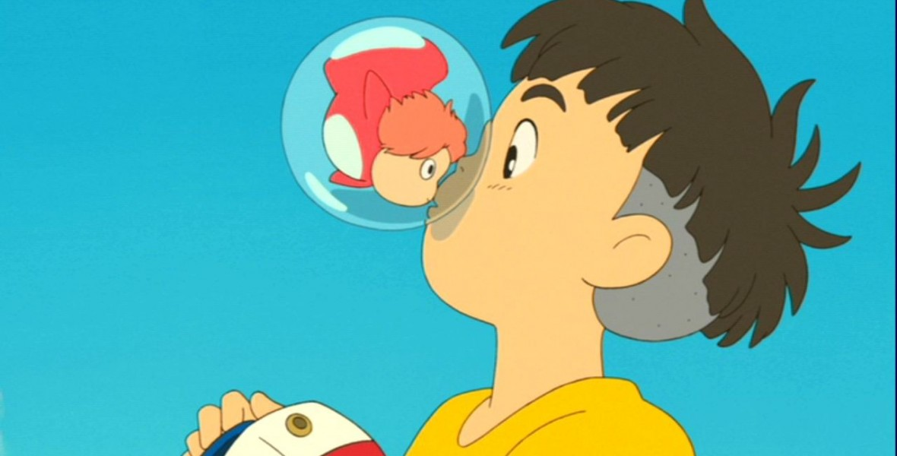
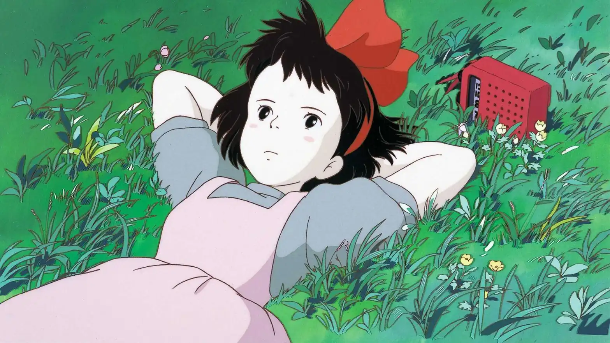
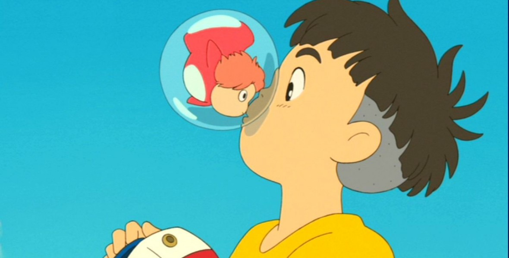
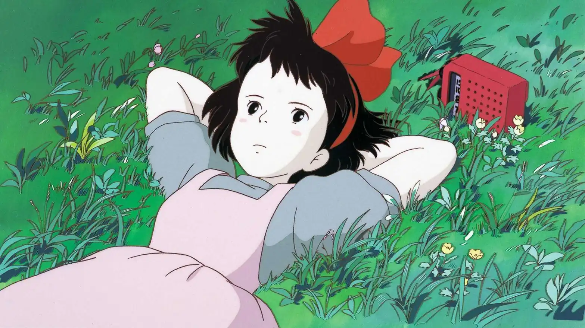

.jpg)
In this anime feature, 13-year-old Kiki moves to a seaside town with her talking cat, Jiji, to spend a year alone, in accordance with her village's tradition for witches in training. After learning to control her broomstick, Kiki sets up a flying courier service and soon becomes a fixture in the community. But when the insecure young witch begins questioning herself and loses her magic abilities, she must overcome her self-doubt to get her powers back.

In this animated feature by noted Japanese director Hayao Miyazaki, 10-year-old Chihiro (Rumi Hiiragi) and her parents (Takashi Naitô, Yasuko Sawaguchi) stumble upon a seemingly abandoned amusement park. After her mother and father are turned into giant pigs, Chihiro meets the mysterious Haku (Miyu Irino), who explains that the park is a resort for supernatural beings who need a break from their time spent in the earthly realm, and that she must work there to free herself and her parents.

During a forbidden excursion to see the surface world, a goldfish princess encounters a human boy named Sosuke, who gives her the name Ponyo. Ponyo longs to become human, and as her friendship with Sosuke grows, she becomes more humanlike. Ponyo's father brings her back to their ocean kingdom, but so strong is Ponyo's wish to live on the surface that she breaks free, and in the process, spills a collection of magical elixirs that endanger Sosuke's village.